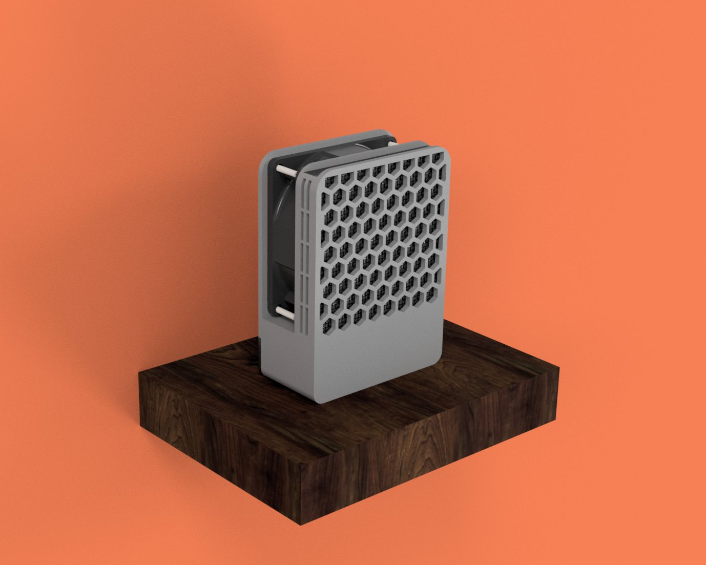
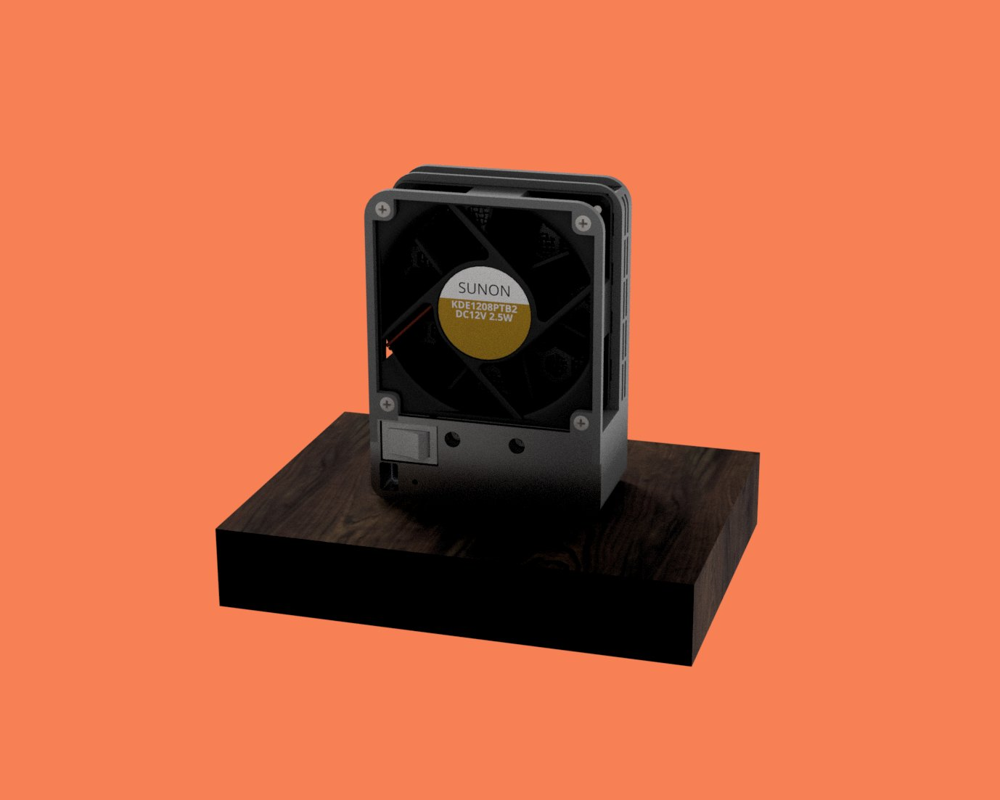
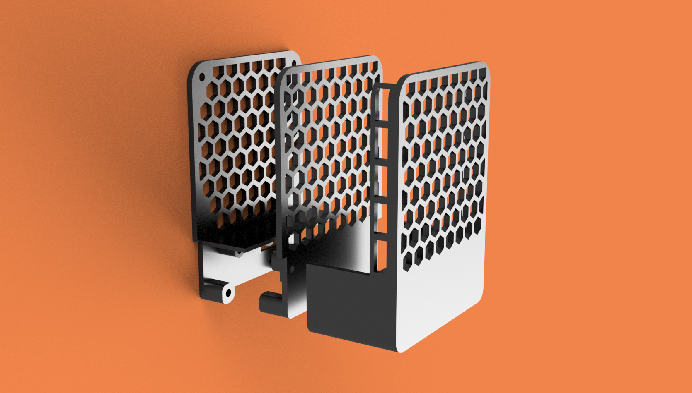
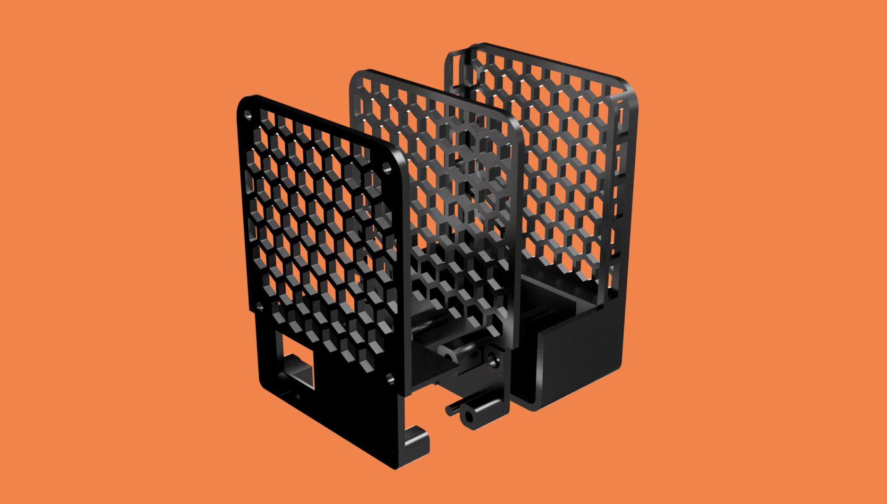
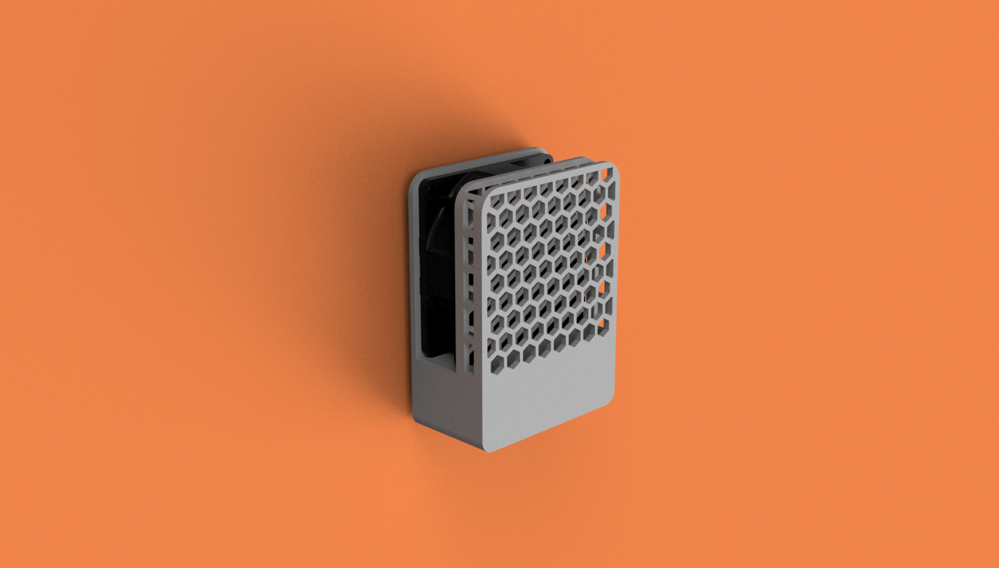
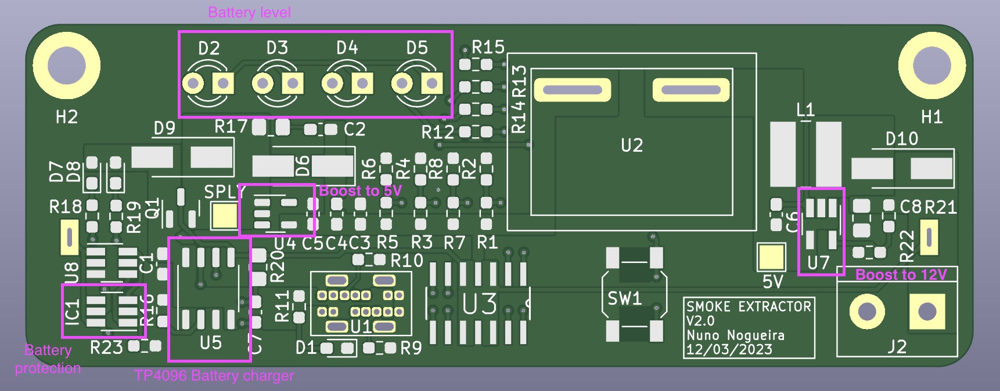
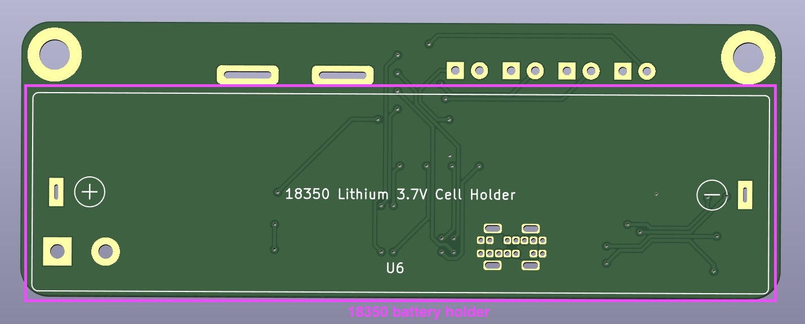

How can you make your own portable Smoke Extractor
31/07/2022
Introduction
One of my 2022 goals was to create something - a product or a service. Since then, I've been working on a personal, portable and small smoke extractor.

I started learning about DC/DC Boost Converters when I noticed the fans that required more power were not supplied with 5V, they were, instead, supplied with 12V or 24V. This finding pushed me into learning about boost converter's hardware design and requirements which would lead to my end goal.
Design and challenges
After learning about the boost converters, the design part was the next big thing. Designed the entire case and tried to keep a minimalist look while minimizing any empty spot and creating a solid aesthetic object.


The renders above are from my the first attempt to finish the design. And, as always tends to happen, the design was far from finished. My first idea was to split the case in two:
- the front, which would take the pcb and the smoke filter.
- the back, which would act like a lid and would have some screws to attach the design together.
After the first printing attempt, I realized right away this was not the best idea - the front part was hard to print, specially on the side part where the smoke extractor is (even with printed supports, the print had a bad quality). Therefore, the solution was to split the design in three parts, adding a middle layer which holds both front and back together.



Also, if you were attentive, you could notice the back from the first renders didn't have the honeycomb pattern. The older back was way too weak and was causing the fan to bend backwards, mainly caused by the screws force on the bottom. The new back is robust enough.
One smart fool
Until this point, the project looks awesome, right? I thought so. However, this project was (and is) supposed to be open-source but there are no files or documentation about it. Let me explain.
I've started this project with the boost converter PCB, but eventually I aimed for more - I wanted to learn more about electronics and PCB design. Something which started to be a single boost converter board that would convert 5V to 12V, became a battery-powered-charged-converter-from-3.7V-or-5V-to-9V-or-12V - complex enough.
I lost the motivation right away. Every right step, every successful design, I would add more complexity in each of them.

My worst enemy was no one but myself. Realized this when the design, together with the single boost board PCB, turned out to be an amazing prototype. However, as I had already added more complexity on top of it, no longer had the files to share.
In my opinion, Albert Einstein described this problem accurately:
Any intelligent fool can make things bigger, more complex, and more violent. It takes a touch of genius - and a lot of courage - to move in the opposite direction.
It is time to have this touch.
Supply chain and product improvements saved me from self disappointment
Supply chain issues are usually very bad thing and everyone working at a tech company knows what I am talking about. This could be my case if I didn't have to redesign everything from scratch anyway.
Turns out, the boost converter I have been using the whole time, is, for everyone's surprise, out of stock. It sucks!... but, comes in the right time as well!
Let's also take this chance to look back and to polish the prototype edges.
Electrical issues
As for today, the product, in order to work correctly, needs to draw around 600mA at 5V. This might change with the next boost converter chip, but this is a good starting point to aim for 80% of efficiency.
600mA, at most of the USB default ports, is already too much, since most of the USB default ports can only provide current from 100mA to 500mA. When I connected the smoke extractor, fully assembled, to my computers USB dock, it was causing my desk light (also powered by the same dock), to flicker every half a second. Something was not right, pretty obvious huh!
To know more about this issue, I created a post on Reddit. I wanted to know exactly what was happening and what was I missing. Luckily, an amazing person decided to help me and explain why my desk lamp was flickering:
Probably overcurrent detection triggering, then resetting and waiting a reasonable time for inrush current to finish before triggering again.
Easy explanation, thanks triffid_hunter!
As I was reading his explanation, I knew this had to be fixed. How could I fix this?
Nevertheless, this might not be the problem I think it is. The next board will be battery powered and charged through USB-C. Its normal operation does not include the USB-C input to be the main source power.
Next changes on version 2.0
For the version v2.0, if I'm even allowed to call it that, the smoke extractor will include a lithium 18350 battery, the charger circuit and consecutive safety circuit (discharge, overcharge, etc) and a battery level button followed by some tiny lights to return feedback to the user. Addionally, will add the option to purchase the Bill of Materials straight from JLCPCB.

